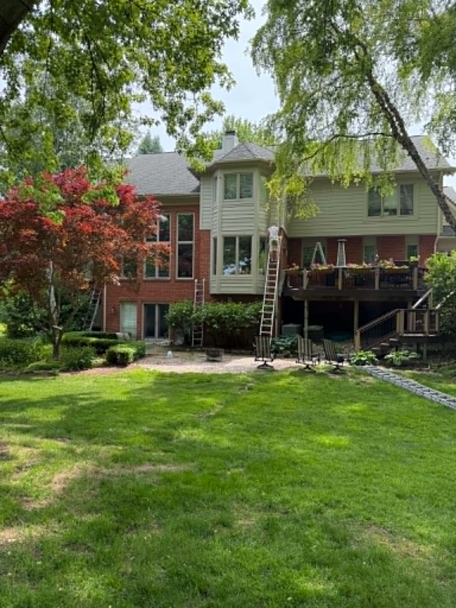
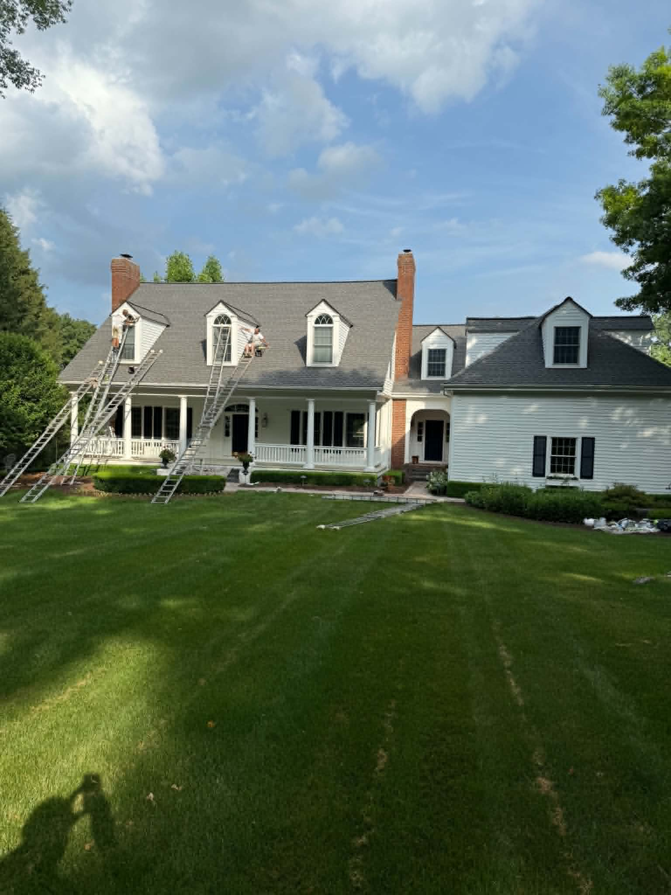
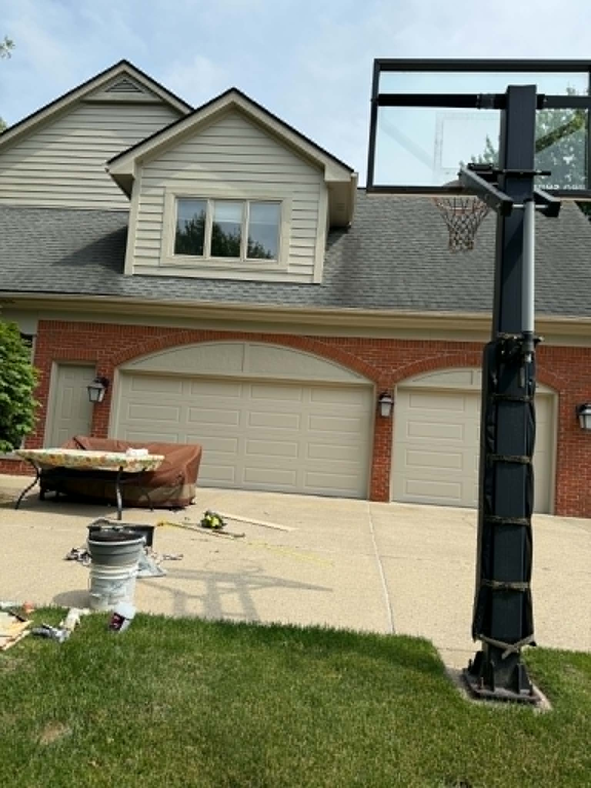
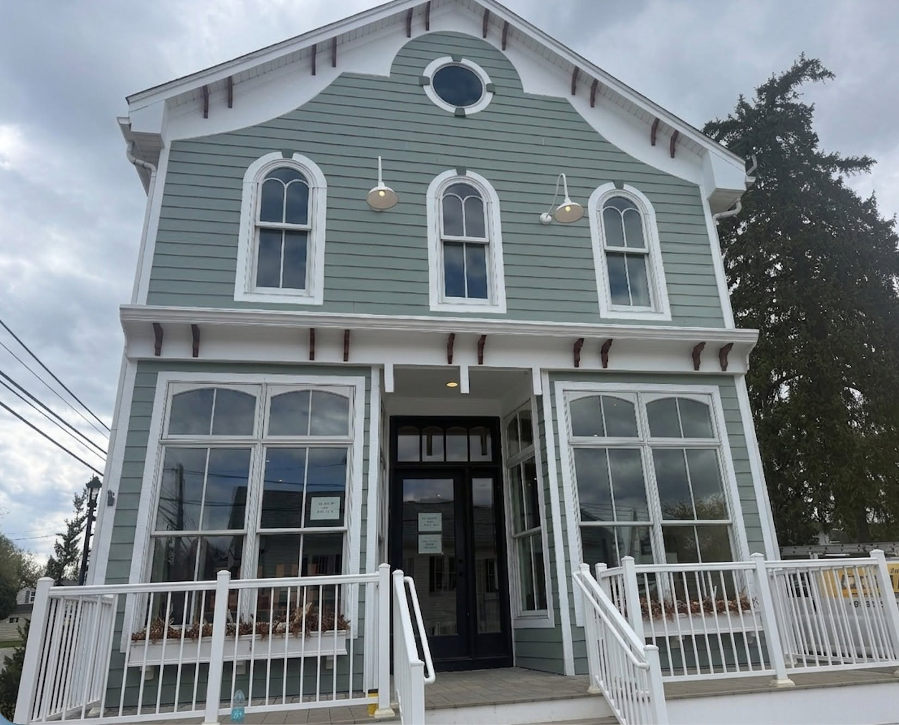

Siding & Clapboard
Wood, fiber cement, vinyl — properly prepped, primed, and coated. We don't skip steps, even when they're inconvenient.
Michigan's freeze-thaw cycles are brutal on exterior paint. We serve homeowners throughout Oakland Township, Lake Orion, Shelby Township, Rochester Hills, and Metamora with coatings rated for our climate, applied with thorough prep — so your home looks sharp and stays protected for years, not one season.

Freeze-thaw cycles demand coatings specifically rated for the climate — and application conditions that allow the paint to cure properly. After 30+ years serving Oakland Township, Lake Orion, Shelby Township, Rochester Hills, and Metamora, we know what works. The right product, the right prep, the right timing.
Wood, fiber cement, vinyl — properly prepped, primed, and coated. We don't skip steps, even when they're inconvenient.
The detail work that defines an exterior. Crisp lines on every edge — the difference between "painted" and "finished."
Entry doors, garage doors, shutters, window surrounds — each element painted with the precision it deserves.
Deep-clean siding, driveways, decks, and fences before painting — or just to restore the curb appeal your home deserves.
Stain, solid color, or clear seal — properly prepared wood with a finish built for Michigan's weather extremes.
Describe what you're seeing — fading, cracking, peeling. We'll tell you what needs to be done, and what can wait.
Call (248) 978-2946



Tim walks the full exterior — siding, trim, soffits, decks. Written estimate with clear scope and clear cost.
Every surface washed, dried, scraped, caulked, and primed before any finish coat is applied.
Michigan-rated coatings applied in the right conditions. Every edge crisp. Owner on-site the entire time.
Final inspection together. Every item addressed. Site cleared completely — as if we were never there.
We provide exterior painting, power washing, and surface prep to homeowners within approximately 20 miles of Oakland Township, Michigan. From Metamora to Shelby Township, from Lake Orion to Rochester Hills, every job gets the same thorough prep and Michigan-climate-rated finish.
Spring through early fall is ideal. Michigan winters are too cold for proper paint curing, and painting before the first hard freeze gives finishes time to bond fully. We'll recommend timing based on your specific materials and current condition.
With proper prep and the right product for Michigan's climate, a quality exterior paint job typically lasts 7 to 10 years. Skipping prep steps — power washing, scraping, caulking, priming — is the most common reason exterior paint fails prematurely.
We handle siding, clapboard, trim, fascia, soffits, doors, shutters, window surrounds, decks, and fences for homes throughout Oakland Township, Lake Orion, Shelby Township, Rochester Hills, Metamora, and surrounding Metro Detroit communities.
Absolutely. Cracked caulk, loose trim, rotted wood, and peeling paint are all addressed before any finish coat goes on. A great paint job starts with a properly prepared surface — we don't paint over problems.
Yes. Every exterior paint project begins with a thorough power wash, followed by scraping, caulking, and priming as needed. Power washing is also available as a standalone service to restore curb appeal between paint jobs.
Exterior painting is best scheduled spring through early fall. Request your free estimate and we'll put together a timeline that works for your home in Oakland Township, Lake Orion, Shelby Township, Rochester Hills, Metamora, or anywhere in the greater Metro Detroit area.